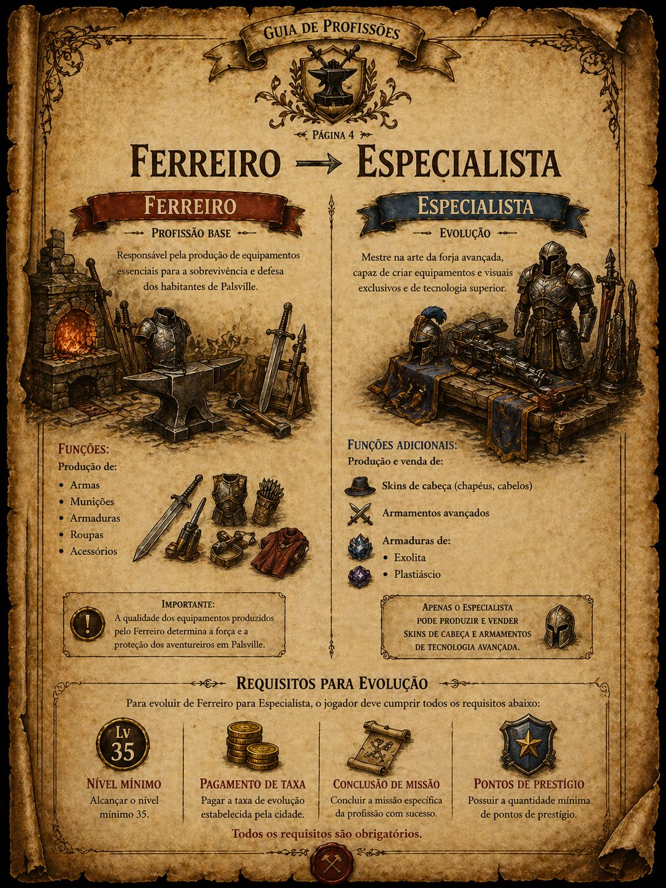
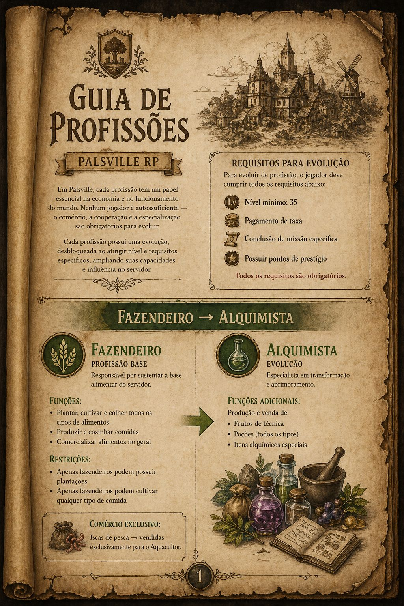
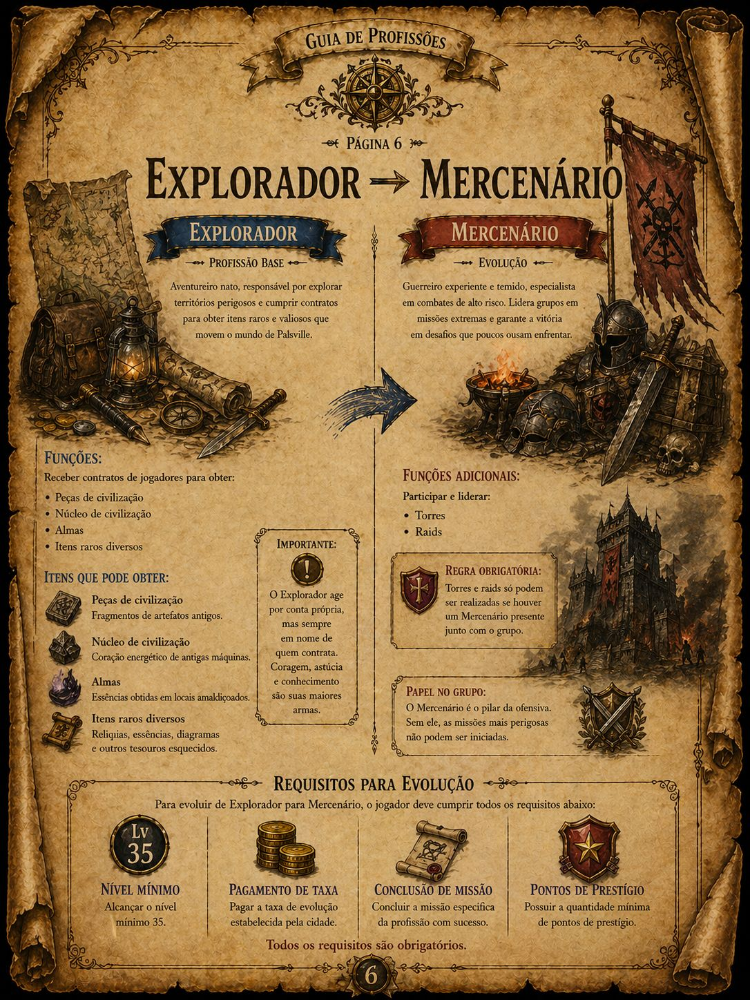
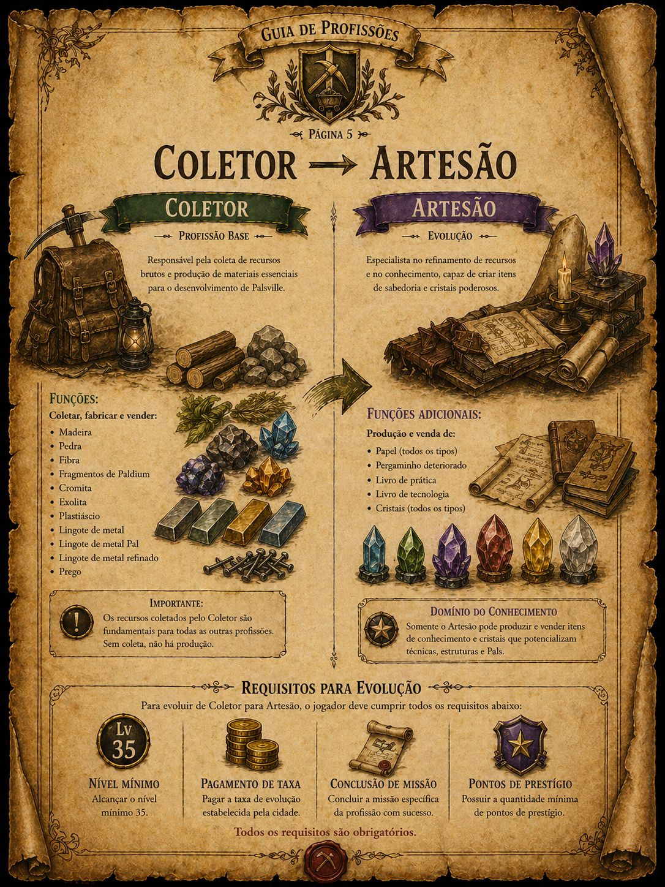
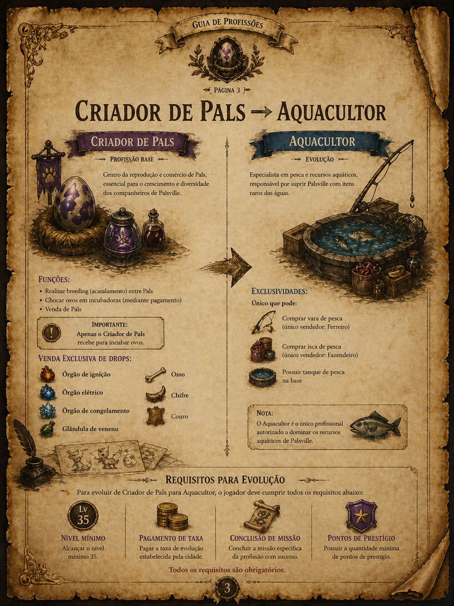
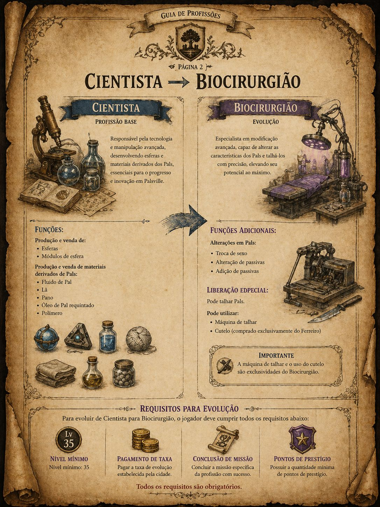

Ferreiro ➜ Especialista
Responsável por produção, melhorias e itens ligados à criação e manutenção de equipamentos.

Fazendeiro ➜ Alquimista
Trabalha com cultivo, alimentos, recursos naturais e evolução para produção alquímica.

Explorador ➜ Mercenário
Focado em exploração, missões, coleta de informações, combate e serviços de risco.

Coletor ➜ Artesão
Coleta recursos do mundo e evolui para produção artesanal e itens de utilidade.

Criador de Pal ➜ Aquacultor
Especialista no cuidado, criação, controle e uso estratégico dos Pals dentro do RP.

Cientista ➜ Biocirurgião
Atua com pesquisa, tecnologia, experimentos e desenvolvimento avançado dentro do servidor.
🏛️ Cargos do Servidor
- Bancário
- Economista
- Inspetor de Pal
- Supervisor de Controle de Pal